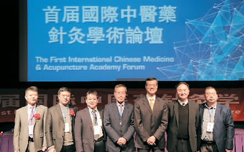
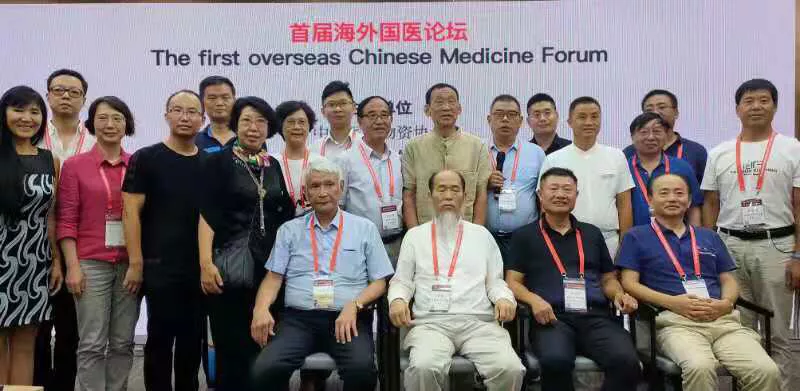
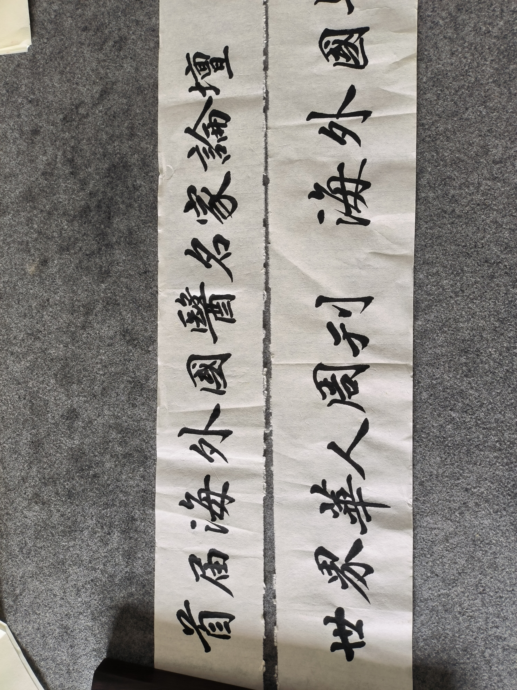
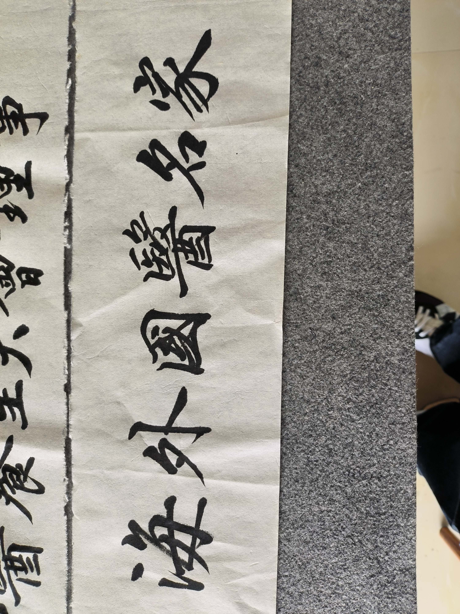
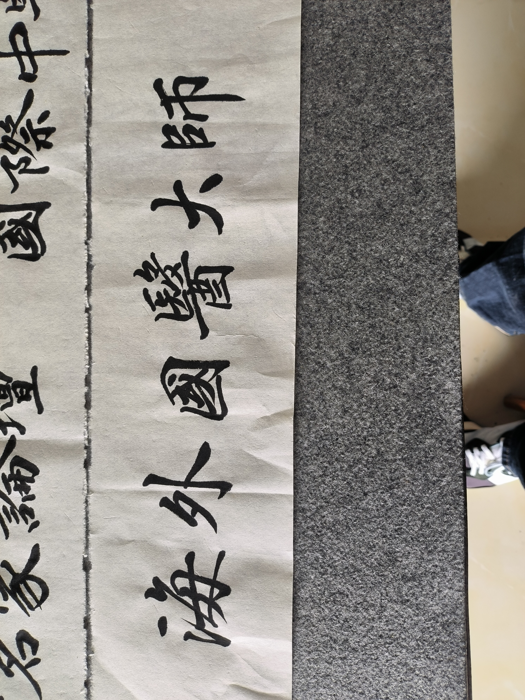

Événements phares
De la première conférence à Vancouver en 2017 au deuxième Symposium des grands maîtres à Haikou en 2025 -- résumés en français des dix événements phares, avec lien vers les rapports complets en chinois.
Événements phares
Entre 2017 et 2025, le Conseil a organisé ou co-organisé dix événements phares. Chacun est résumé ci-dessous en français ; les rapports originaux complets, avec leurs attributions de presse, sont disponibles sur l'édition chinoise de cette page (https://cccm.info/activities.html).
1. La Première Conférence internationale sur les soins de santé par la médecine chinoise (Vancouver, Canada)

Tenue du 27 décembre 2017 au 3 janvier 2018, cette conférence d'une semaine a été le projet de lancement outre-mer du « Voyage mondial de la médecine chinoise ». Co-organisée avec l'Université de médecine chinoise de Canton, les commissions spécialisées compétentes de la Fédération mondiale des sociétés de médecine chinoise et BC TCM Community, elle a réuni plus d'une centaine de médecins de médecine chinoise, experts en acupuncture et chercheurs en santé réputés de Chine et du Canada, et attiré plus d'un millier de membres de la communauté chinoise et de Canadiens dans ses activités annexes. Au programme : le Premier Forum académique international de médecine chinoise et d'acupuncture ; une grande clinique gratuite communautaire forte de plus de vingt postes tenus par des dizaines de praticiens agréés au service de centaines d'habitants de Vancouver ; ainsi qu'une soirée culturelle sur le thème du bien-être et des conférences scientifiques grand public.
2. Le Forum international de médecine chinoise 2018 (Hefei, Anhui)
Le 11 mai 2018, le 10e Congrès mondial du bien-être et la 4e Exposition internationale de l'industrie de la silver économie de l'Anhui se sont ouverts au Centre des congrès et expositions de l'Anhui, avec près de dix mille délégués : responsables gouvernementaux, dirigeants de la filière, experts universitaires et médecins renommés de Chine et de l'étranger. La cérémonie d'ouverture et le forum des interventions principales ont été présidés par le professeur Zheng Zhijian de l'hôpital de Pékin, dix fois de suite secrétaire général du Congrès mondial du bien-être. Les grands maîtres de la médecine chinoise Xu Jingshi et Li Yefu ont honoré l'événement de leur présence malgré leur âge avancé, aux côtés d'invités diplomatiques du Soudan du Sud, de la Gambie, de l'Espagne et de la Corée du Sud. La délégation du Conseil a participé au congrès dans le cadre de ses échanges sino-canadiens permanents.
3. Le Forum 2018 de médecine chinoise et de bien-être (Youyu, Shanxi)
Les 8 et 9 septembre 2018, le Sommet bien-être du 10e Congrès mondial du bien-être s'est tenu dans le district de Youyu, au Shanxi, sur le thème « Mettre en pratique la théorie des "Deux Montagnes", faire de Youyu une terre de bien-être ». Accueilli par la Fondation chinoise pour le développement médical et sanitaire et le gouvernement municipal de Shuozhou, le sommet a proposé forums thématiques, programmes ciblés d'assistance médicale aux populations démunies, forum international de médecine chinoise et bien-être, rencontres de projets entre agriculture verte et industrie du bien-être, ainsi qu'une grande clinique gratuite. Les ambassadeurs du Burundi et du Niger en Chine ont assisté à l'ouverture, tout comme une délégation du Conseil comprenant Cao Baoqi, registraire de l'ordre des praticiens de médecine chinoise et d'acupuncture de la Colombie-Britannique.
4. Le Premier Forum de la médecine chinoise d'outre-mer (Changsha, Hunan)


Le 23 août 2019, en marge de la 2e Conférence mondiale du commerce de services de médecine chinoise et de l'Exposition 2019 de l'industrie chinoise (Hunan) de la médecine chinoise et de la santé à Changsha, plus d'une centaine de praticiens de médecine chinoise établis à l'étranger, venus d'une douzaine de pays, se sont réunis pour un forum de deux jours. Organisé par l'Association chinoise des matériaux médicaux avec le Conseil comme co-organisateur, le programme comprenait des rencontres avec les experts, des entretiens télévisés et des conférences d'acupuncture des formules classiques. Les co-présidents du Conseil Xu Weimin et Li Lei ont assumé la présidence honorifique du forum.
5. Le Deuxième Forum de la médecine chinoise d'outre-mer 2020 (Vancouver, Canada · en ligne)
En raison de la pandémie de COVID-19, le deuxième forum a été déplacé en ligne, rebaptisé « Deuxième Forum des grands maîtres de médecine chinoise », et tenu en une série de sessions ZOOM les 12 septembre, 10 octobre, 7 novembre et 30 décembre 2020. Lors de la première session, présidée par le président exécutif du Conseil Zhang Hui, huit experts des États-Unis, du Canada, du Royaume-Uni, d'Australie, de Chine continentale et de Taïwan ont donné des conférences académiques devant des dizaines de praticiens et passionnés de bien-être du monde entier. Fin décembre, les lauréats 2020 de la sélection « Grands maîtres de la médecine chinoise d'outre-mer » ont été annoncés dans le cadre du Forum mondial du développement des marques de la médecine chinoise.
6. Le Forum des grands maîtres 2021 (Changsha, Hunan · en ligne)
Du 6 au 11 juin 2021, six sessions en ligne du Troisième Forum des grands maîtres de médecine chinoise se sont tenues via ZOOM, retransmises en direct sur YouTube, Tencent et Sohu devant plusieurs centaines de praticiens, acupuncteurs et passionnés du monde entier. Le comité d'organisation était dirigé par le directeur général du Conseil Zhang Hui en tant que président exécutif, avec pour président tournant le Dr Zheng Jianhua (président à vie de l'Association australienne de médecine chinoise) et pour co-présidents exécutifs les Drs Huang Guojian (président de l'Alliance canadienne de médecine chinoise et d'acupuncture) et Fu Xueli. Les présidents honoraires comptaient notamment Chen Yemeng, Tian Haihe, Wu Binjiang, Yang Jie et Yu Weidong.
7. Le Quatrième Forum de la médecine chinoise d'outre-mer : séance spéciale avec le professeur Jin Guanyuan (2023 · en ligne)
Le 26 novembre 2023, le Conseil a accueilli une séance spéciale en ligne donnée par le professeur Jin Guanyuan, modérée par l'acupuncteur Yan Huaishi. Le professeur Jin -- acupuncteur agréé dans le Wisconsin, l'un des tout premiers dix-huit « grands-pères » acupuncteurs et herbalistes certifiés NCCAOM aux États-Unis, professeur à l'Atlantic Institute of Oriental Medicine, professeur invité honoraire au New York College of Traditional Chinese Medicine et évaluateur de subventions au NIH -- a prononcé la conférence « La médecine moderne étreint l'acupuncture classique », couvrant les fondements scientifiques du traitement des maladies internes par l'externe, la nature des points d'acupuncture comme interaction entre l'homéostasie et l'environnement, l'essence des méridiens -- « là où naît la maladie, là où s'exerce le traitement » -- et le processus réflexe par lequel « quatre onces soulèvent mille livres ». Gong Changzhen, Xu Chaoji et Lin Minghui en ont assuré les commentaires.
8. Le Premier Forum des grands maîtres et experts renommés de la médecine chinoise d'outre-mer (Vancouver, Canada)


Du 11 au 17 juin 2024 s'est tenu à Vancouver le Premier Forum des grands maîtres et experts renommés de la médecine chinoise d'outre-mer, conjointement avec l'avant-première de « Bencao Wujiang » (Plantes sans frontières), première saison du documentaire « Un siècle de médecine chinoise outre-mer », avec le parrainage exclusif du groupe KF Times. En sept jours, plus de vingt lauréats de la première sélection ont partagé leur savoir du bien-être avec la communauté de Vancouver, échangé sur des cas cliniques difficiles, exploré les ressources en plantes médicinales de l'île de Vancouver en Colombie-Britannique et pris part à un voyage de bien-être et d'acupuncture du scalp à Banff. La cérémonie de remise des distinctions s'est déroulée dans le vénérable Rio Theatre de Vancouver, fort de près d'un siècle d'existence.
9. La Deuxième Conférence internationale sur les soins de santé par la médecine chinoise et le Congrès mondial 2024 d'acupuncture du scalp (Hainan)
Le 23 novembre 2024, le congrès s'est ouvert au Wyndham Garden Hotel de Haikou, réunissant des autorités de la médecine chinoise du monde entier pour une fête académique du bien-être et de l'acupuncture du scalp. Parmi les interventions : « Cinquante ans d'acupuncture du scalp de l'école Jiao : rétrospective » de Jiao Shunfa, « Nouvelles percées cliniques de l'acupuncture du scalp de l'école Jiao » de Jiao Liming, « Traiter en clinique des maladies multiples aux causes multiples » de Zhou Libo et « Ouvrir une nouvelle ère des décoctions de plantes médicinales chinoises biologiques modernes » de Ding Yuqiu. Le congrès était co-organisé par le Conseil avec le Centre de recherche en acupuncture du scalp de Jiao Shunfa, l'hebdomadaire Chinese Weekly et des structures partenaires.
10. Le Deuxième Symposium des grands maîtres de médecine chinoise (Hainan)
Le 19 avril 2025, le symposium s'est ouvert à Haikou, sous la plume de l'agence Chine Nouvelle (Hainan). Des experts de Chine et de l'étranger ont approfondi la transmission, l'innovation et la modernisation de la médecine chinoise, notamment le traitement intégré du diabète par les médecines chinoise et occidentale, les mécanismes anticancéreux de la médecine chinoise et la prévention des maladies cardiovasculaires et cérébrovasculaires. Li Gengjun, directeur du Centre hainanais d'échanges culturels internationaux, a prononcé le discours d'ouverture ; Zhang Hui, administrateur outre-mer du Conseil, a rendu compte des progrès de la médecine chinoise à l'étranger et annoncé pour l'année suivante une tournée de conférences des grands maîtres à travers la Chine.